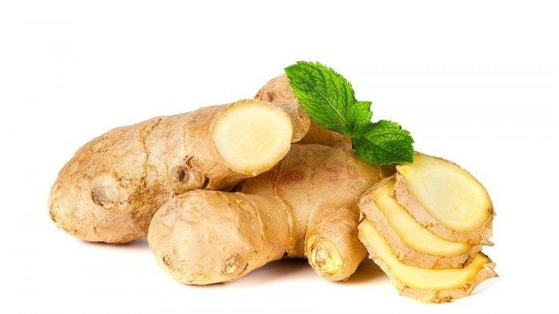

|
|
Home About Us Support Us Contact Us |
JaheManfaat jahe bukan hanya sebagai tumbuhan yang bisa menghangatkan tubuh saja. Jahe merupakan tanaman yang berasal dari Asia Tenggara. Tanaman jahe ini kemudian menyebar ke berbagai negara. Terkenal karena aromanya yang khas, jahe dijadikan bahan masakan sekaligus pengobatan alternatif di Cina, India, hingga Timur Tengah. Saat memilih jahe terutama jika ingin Anda gunakan untuk pengobatan, Anda dapat memilih jahe yang masih segar, strukturnya kokoh, halus, dan tidak berjamur. Apa saja manfaat jahe yang bisa Anda dapatkan untuk kesehatan? Kegunaan dan manfaat jaheJahe segar memiliki rasa yang lebih kuat jika dibandingkan dengan jahe bubuk, kandungan gingerol yang baik bagi kesehatan juga masih banyak terdapat pada manfaat jahe segar. Untuk memanfaatkan jahe segar, Anda dapat mencampur jahe dengan masakan seperti masakan olahan seafood, topping salad, dan campuran smoothies atau jus Anda. Namun jika memilih jahe dalam bentuk bubuk, pastikan Anda memilih bubuk jahe yang masih murni. Minuman bubuk jahe yang dijual di pasaran biasanya sudah mengandung tambahan gula. Simpan bubuk jahe dalam wadah tertutup rapat dan disimpan di tempat yang kering, gelap, serta tidak pengap atau panas. Manfaat jahe bagi kesehatanMengatasi masalah pencernaanManfaat jahe memiliki sejarah panjang dalam mengatasi masalah terkait pencernaan. Dikenal dari generasi ke generasi, jahe merupakan salah satu bahan alternatif untuk memperlancar sistem pencernaan. Kandungan phenolic dalam jahe berfungsi untuk meredakan gejala iritasi gastrointestinal, menstimulasi air liur, mencegah terjadinya kontraksi pada perut, hingga membantu pergerakan makanan dan minuman selama berada di pencernaan. Jahe juga disebut sebagai carminative, suatu substansi yang dapat membantu mengeluarkan gas berlebih yang ada di sistem pencernaan Anda. Masalah pencernaan seperti kolik dan dispepsia dapat diatasi dengan jahe. Mengatasi mualManfaat jahe memiliki sejarah panjang dalam mengatasi masalah terkait pencernaan. Dikenal dari generasi ke generasi, jahe merupakan salah satu bahan alternatif untuk memperlancar sistem pencernaan. Kandungan phenolic dalam jahe berfungsi untuk meredakan gejala iritasi gastrointestinal, menstimulasi air liur, mencegah terjadinya kontraksi pada perut, hingga membantu pergerakan makanan dan minuman selama berada di pencernaan. Jahe juga disebut sebagai carminative, suatu substansi yang dapat membantu mengeluarkan gas berlebih yang ada di sistem pencernaan Anda. Masalah pencernaan seperti kolik dan dispepsia dapat diatasi dengan jahe. Mengurangi Rasa SakitSuatu penelitian yang dilakukan di University of Georgia menyatakan bahwa konsumsi suplemen jahe setiap hari dapat mengurangi sakit-sakit otot yang diakibatkan oleh berolahraga hingga 25%. Manfaat jahe juga dapat mengurangi sakit akibat dysmenorrhea, rasa sakit pada saat menstruasi. Dalam suatu penelitian, disebutkan bahwa 60% wanita merasa rasa sakit yang dikarenakan oleh menstruasi berkurang setelah mengonsumsi jahe. membantu memproses detoksifikasi dan mencegah penyakit kulitJahe merupakan salah satu jenis makanan yang disebut diaphoretic, manfaat jahe juga dapat memicu keluarnya keringat. Pengeluaran keringat bermanfaat bagi Anda terutama saat Anda sedang demam atau flu. Selain membantu proses detoksifikasi, berkeringat juga ternyata dapat melindungi Anda dari mikroorganisme yang dapat menyebabkan infeksi pada kulit. Para ahli meneliti sejenis protein yang disebut dermicidin, diproduksi pada kelenjar keringat dan berfungsi melindungi tubuh dari bakteri seperti E. coli, staphylococcus aureus, serta jamur yang dapat menyebabkan penyakit kulit. melindungi Anda dari kangkerSalah satu kandungan dalam manfaat jahe yang berperan dalam mencegah kanker adalah gingerol, phytonutrient dalam jahe yang juga memberikan rasa pada jahe yang unik. Gingerol dapat mencegah pertumbuhan sel kanker usus besar. University of Minnesota melakukan percobaan kepada sekelompok tikus, pada kelompok yang diberi gingerol terdapat 4 tikus yang mengalami tumor usus besar, sementara pada kelompok yang tidak diberi gingerol terdapat 13 tikus yang mengalami pertumbuhan tumor. Sampai pada hari ke 49 penelitian, seluruh tikus yang tidak diberi gingerol akhirnya disuntik mati karena pertumbuhan tumornya sudah terlalu besar, sementara pada tikus yang diberi gingerol ukuran tumornya setengah dari ukuran tikus yang disuntik mati. Peneliti yang sama kemudian menguji apakah selain mencegah pembentukan tumor, gingerol juga dapat mencegah penyebaran dan mengurangi tingkat keparahan sel tumor. Penelitian tersebut memberikan hasil positif. Gingerol dinilai mampu mencegah penyebaran dan bertambah parahnya sel tumor yang sudah tidak dapat dioperasi. Anti PeredanganGingerol ternyata juga bersifat anti-inflamatori. Hal ini menjelaskan mengapa mereka yang menderita penyakit persendian seperti osteoarthritis dan rematik melaporkan berkurangnya rasa sakit setelah mengonsumsi jahe secara teratur. Mengonsumsi jahe tidak hanya mengurangi rasa sakit tetapi juga mengurangi pembengkakan pada bagian yang sakit. Jahe diperkirakan dapat menghambat komponen yang berperan dalam proses inflamatori dalam tubuh seperti sitokin, kemokin, kondrosit, dan leukosit. Cara penyajian jahe sendiri kalian bisa membuatnya menjadi wedang jahe : | |
 © Healty © Healty |
|